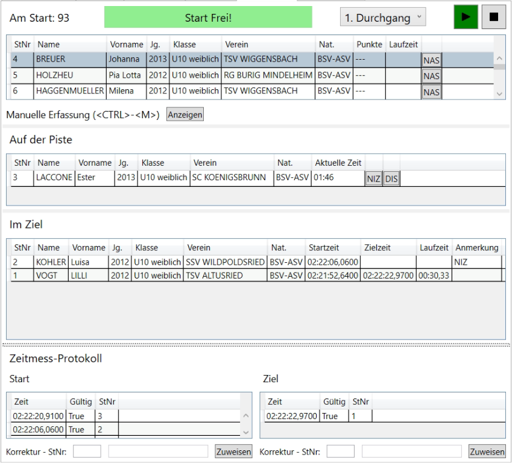
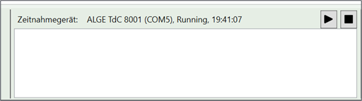
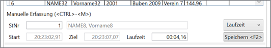
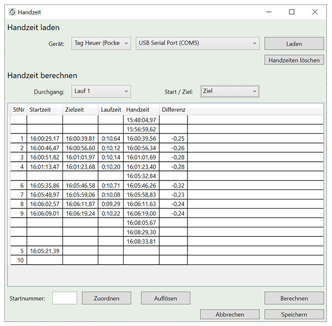
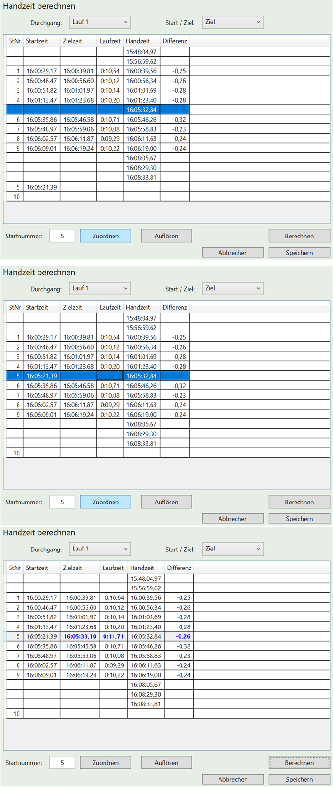

Renndurchführung

Die Renndurchführung wird primär über die beiden Tabs Zeitnahme und Disqualifikation durchgeführt.
Zeitnahme
Die Zeitnahme erfolgt auf dem Tab Zeitnahme.
Als erstes wählt man den aktuellen Durchgang über die Combobox oben rechts.
Der Zeitnahmebereich zeigt drei Listen an:
- Im oberen Bereich befindet sich die nächsten Starter,
- im mittleren Bereich die Rennläufer die gerade auf der Strecke sind und
- im unteren Bereich ist das aktuelle Klassement ersichtlich.
Online Zeitnahme
Um die Zeiten direkt aus dem Zeitnahmegerät während des Rennens zu übernehmen muss man Online Gehen. Das Online Gehen erfolgt über den Play Button im Zeitnahmebereich in der Statuszeile des Programms.

Hinweis: Wenn man online ist, ist es nicht möglich den aktuellen Durchgang zu wechseln. Um den Durchgang zu wechseln, gehen Sie Offline, wechseln Sie den Durchgang und gehen danach wieder Online.
Hinweis: Das verwendete Zeitnahmegerät und der verwendete COM Port kann im Menü Optionen eingestellt werden.
Achtung: Der COM Port wird derzeit erst nach dem Neustart des Programms wirksam.
Zeitnahme Hilfsfunktionen
Es gibt folgende Zeitnahme Hilfsfunktionen. Entsprechende Einstellungen können im Menü Optionen vorgenommen werden.
• Automatisch nicht im Ziel
Wenn ein Läufer nach einer bestimmten Zeit nicht im Ziel ist, wird dieser automatisch als „nicht im Ziel“ (NiZ) gewertet.
• Automatisch nicht im Start
Wenn eine bestimmte Anzahl Starter nach einem nicht gestarteten Läufer gestartet sind, wird der nicht gestartete Läufer automatisch als „nicht am Start“ (NaS) gewertet.
• „Start Frei! – Signal“ Das „Start Frei! – Signal“ erscheint nach einer einstellbaren Zeit, nachdem ein Läufer gestartet ist. Hierbei ertönt auch ein Signalton.
Zeitnahme Testfunktionen
Es existieren folgende Tastenkürzel auf dem Zeitnahme Tab, um mit dem Programm zu experimentieren, ohne ein Zeitnahmegerät zu benutzen.
| Tastaturkürzel | Funktion |
|---|---|
| <STRG> - <1> | Aktuelle Computerzeit als Startzeit verwenden |
| <STRG> - <2> | Aktuelle Computerzeit als Zielzeit verwenden |
| <STRG> - <9> | Startzeit löschen |
| <STRG> - <0> | Zielzeit lösche |
Manuelle Zeiterfassung

Neben der Online Zeiterfassung kann man die Zeiten auch manuell erfassen. Dies kann zum Beispiel erforderlich sein, wenn die Übertragung zum Zeitnahmegerät nicht einwandfrei funktioniert oder eine Zeit manuell korrigiert werden muss oder man nicht Online war.
Die Zeit kann entweder als Differenzzeit (also Start- und Zieltageszeit) oder Absolutzeit (also der eigentlichen Laufzeit) angegeben werden. Das Wechseln des Eingabemodus erfolgt mit der Combobox.
Wichtig: Damit die eingegebenen Zeiten übernommen werden, muss der Button Speichern oder die Taste <F2> gedrückt werden.
Disqualifikation & Ausscheidungen
Disqualifikationen und Ausscheidungen können hier verwaltet werden. Der Ausscheidungsbereich besteht aus zwei Bereichen: dem Ausscheidungsbereich und dem aktuellen Laufergebnisbereich ähnlich dem Zeitnahme-Tab.
Im Ausscheidungsbereich lassen sich die Teilnehmer nachfolgenden Kriterien filtern:
• Ohne Zeit
Hier erscheinen alle Teilnehmer, bei denen keine gültige Zeit existiert. Üblicherweise ist der Läufer in diesem Fall entweder nicht am Start oder nicht im Ziel gewesen.
• Ausgeschiedene
Hier erscheinen alle Teilnehmer, bei denen bereits eine Ausscheidung vermerkt worden ist
• Keine Daten
Hier erscheinen Teilnehmer, die weder eine Zeit noch eine Ausscheidung vermerkt haben. Ein Durchgang ist üblicherweise dann erfolgreich abgeschlossen / erfasst, wenn diese Liste leer ist.
• Alle
Alle Teilnehmer erscheinen in der Liste.
Um eine Ausscheidung zu editieren, gehen Sie wie folgt vor:
• Startnummer eingeben
Die Startnummer kann durch Auswahl des Teilnehmers in der Liste festgelegt werden oder durch direkte Eingabe der Startnummer in das Feld „St.Nr“. Mit dem Tastaturkürzel <STRG> - <M> kann sofort die Startnummer eingegeben werden.
Nach Eingabe der Startnummer erscheint der Name in dem Feld daneben, sowie eine vorhandene Ausscheidung wird angezeigt.
• Ausscheidungstyp auswählen
Durch <TAB> kann man in das nächste Feld (Ausscheidungsgrund) springen. Benutzen Sie die Cursor Hoch- und Runtertasten, um den Grund auszuwählen. Benutzen Sie alternativ die Maus.
• Anmerkung eingeben
Springen Sie mit <TAB> zum Anmerkungsfeld und geben sie eine Anmerkung ein (z.B. „Tor 8, vorbeigefahren“).
• Ausscheidung speichern
Speichern sie die Ausscheidung mit <F2> oder durch klick auf „Speichern“.
Achtung: Stellen Sie sicher, dass Sie den richtigen Durchgang ausgewählt haben. Per Default ist immer der Durchgang der aktuellen Zeitnahme eingestellt.
Hinweis: Man kann direkt während der Zeitnahme auch gleich Ausscheidungen eingeben. Der Sprecher sieht dies dann sofort.
Hinweis: Man kann auch für mehrere Teilnehmer gleichzeitig eine Ausscheidung vermerken. Be-nutzen Sie dazu die Mehrfachauswahl in der Liste: Wählen Sie die entsprechenden Teilnehmer bei gleichzeitigem Drücken der <SHIFT> bzw. <STRG> Taste aus.
Live Timing
Race Horology unterstützt verschiedene Live Timing Plattformen um das Renngeschehen für die Zuschauer sofort sichtbar zu machen.
rennmeldung.de

Um das Livetiming von https://rennmeldung.de zu nutzen gehen Sie wie folgt vor:
- Geben Sie folgende Daten an: Bewerbsnummer, Login und Passworts.
- Drücken Sie „Login“.
- War der Login erfolgreich füllt sich die nachfolgende Combobox mit den verfügbaren Ver-anstaltungen.
- Wählen Sie die korrekte Veranstaltung aus.
- Drücken Sie „Start“.
Jede Änderung, die ab sofort passiert, wird unmittelbar an rennmeldung.de übertragen und ist somit für die renninteressierten Zuschauer sofort sichtbar.

Weiterhin ist es möglich einen Status bzw. Kommentar für die Zuschauer zu hinterlassen. Geben Sie diesen in dem unteren Feld „Live Timing – Status“ ein. Der Text wird automatisch übertragen.
FIS Live Timing
Anmerkung: FIS Live Timing wird derzeit noch nicht unterstützt – dies kommt in einer der nächsten Versionen (voraussichtlich noch für die Saison 2020/2021).
Handzeit- / Ersatzzeitberechnung
Race Horology unterstützt die Berechnung einer Ersatzzeit nach der IWO, Regel 611.3.2.1.
In die Handzeitberechnung gelangt man über die Tabelle Zeitnahme eines entsprechenden Rennens und den Button Handzeit.

Handzeit laden
Um die Handzeit zu laden, gehen Sie wie folgt vor:
- Stellen Sie sicher, dass der korrekte Lauf ausgewählt ist.
- Stellen Sie sicher, dass die richtige Zeit (Start oder Ziel) ausgewählt ist.
- Wählen sie das entsprechende Gerät (ALGE Timy, Tag Heuer oder aus Datei laden) aus.
- Wählen sie den richtigen COM-Port aus.
- Starten sie den Ladevorgang mit Laden.
Handzeit berechnen

Um eine Handzeit zu berechnen, gehen Sie wie folgt vor:
- Stellen Sie sicher, dass die Handzeiten geladen wurden.
- Markieren Sie die Handzeit, die verwendet werden soll. Normalerweise ist hier noch keine Startnummer zugewiesen.
- Weisen Sie der markierten Handzeit die korrekte Startnummer zu indem Sie:
o Die Handzeit markieren
o Die korrekte Startnummer eintragen
o Auf Zuordnen drücken.
Die Startnummer und die (eventuell anderen) gemessenen Zeiten werden in einer Zeile angezeigt. Die Differenz ist typischerweise leer (unter der Annahme, dass die A-Zeit fehlt).
- Berechnen Sie die Handzeit indem Sie:
o Die zu berechnende Zeit markieren.
o Auf Berechnen klicken.
Mit dem Berechnen wird automatisch ein PDF erzeugt, dass die Zeiten, die zur Berechnung genutzt wurden, enthält.
- Sie können jetzt weitere Handzeiten berechnen, machen Sie dazu einfach weitere Zuwei-sungen bzw. Berechnungen.
- Um die berechneten Handzeiten zu übernehmen, drücken Sie Speichern.